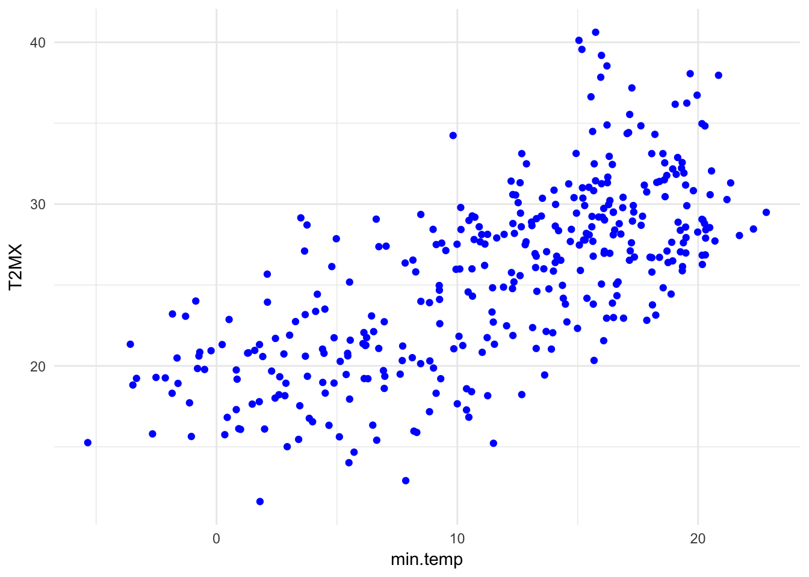

install.packages("APSIM")Load the packages necessary.
library(APSIM)
library(nasapower)
library(rnaturalearth)
library(lubridate)
library(ggplot2)
library(dplyr)NASA - POWER data are often used with APSIM (White et al. 2012) or other models where data may be missing or as a whole data set where data are not readily available, e.g. modelling rice disease globally (Savary et al. 2012).
In this use case we illustrate how use NASA-POWER radiation data with existing station data and format for use in APSIM using the R package, APSIM (Fainges 2017) and how it can be used for a larger modelling exercise like the EPIRICE paper (Savary et al. 2012)
Using the APSIM::prepareMet() example where data for Kingsthorpe, Qld, is provided by the package, we can compare it with NASA-POWER radiation for Kingsthorpe, Queensland for 2010.
To do that first we need to use get_cell() to fetch the data necessary to calculate SRAD for 2010.
kings_nasa <- get_cell(
lonlat = c(151.81, -27.48),
stdate = "2010-1-1",
endate = "2010-12-31",
vars = c("T2MX", "T2MN", "RAIN")
)To compare the data more easily using graphs we’ll join the two data frames using dplyr.
First convert the Date column from kingsData to a Date object using lubridate.
Next, join the two data frames together to create a data frame called, compare.
Graph maximum temperature, comparing kingsData to NASA-POWER data and check correlation between the values.
Graph minimum temperature, comparing kingsData to NASA-POWER data.

cor(compare$min.temp, compare$T2MN)
#> [1] 0.9424266# reorder the data columns from nasapower
kings_met <- kings_nasa[...]
# from the APSIM documentation example
new_names <-
c("Date",
"maxt",
"mint",
"rain",
"evaporation",
"radn",
"vp",
"Wind",
"RH",
"SVP")
units <-
c("()",
"(oC)",
"(oC)",
"(mm)",
"(mm)",
"(MJ/m^2/day)",
"()",
"()",
"()",
"()")
prepareMet(kings_met,
lat = kings_nasa[1, "LAT"],
lon = kings_nasa[1, "LON"],
newNames = new_names,
units = units)To use get_region() with APSIM::prepareMet() we need to make separate met files for each cell from the resulting data frame object, which is easy to do using dplyr.
stdate = "2017-1-1", endate = "2017-12-31")
library(dplyr)
# mutate: add unique id values (lon-lat value)
# arrange: sort data frames by that id
# split: take the data.frame() and split it into a list of data.frames by id
oz_list <- oz %>%
split(., .$id)
# from the APSIM documentation example
new_names <-
c("Date",
"maxt",
"mint",
"rain",
"evaporation",
"radn",
"vp",
"Wind",
"RH",
"SVP")
units <-
c("()",
"(oC)",
"(oC)",
"(mm)",
"(mm)",
"(MJ/m^2/day)",
"()",
"()",
"()",
"()")
# map:: apply the prepareMet() function to the list of data frames
# write each item for the list to a file on disk for use in APSIM
met_list <- lapply(oz_list, function(i)
prepareMet(oz_list[i],
lat = oz_list[[i]][1, "LAT"],
lon = oz_list[[i]][1, "LON"],
newNames = new_names,
units = units))
# write met files to disk
lapply(1:length(met_list),
function(i) writeMetFile(met_list[[i]],
fileName = paste0(names(met_list[i]))))Justin Fainges (2017) “APSIM: General Utility Functions for the ‘Agricultural Production Systems Simulator’”. R package version 0.9.2. https://CRAN.R-project.org/package=APSIM
Serge Savary, Andrew Nelson, Laetitia Willocquet, Ireneo Pangga and Jorrel Aunario (2012) “Modeling and mapping potential epidemics of rice diseases globally” Crop Protection, Volume 34, Pages 6-17, ISSN 0261-2194 DOI: 10.1016/j.cropro.2011.11.009
Jeffrey W. White, Gerrit Hoogenboom, Paul W. Stackhouse, James M. Hoell (2009) “Evaluation of NASA satellite- and assimilation model-derived long-term daily temperature data over the continental US” Agricultural and Forest Meteorology, Volume 148, Issue 10, 2008, Pages 1574-1584, ISSN 0168-1923, DOI: 10.1016/j.agrformet.2008.05.017.